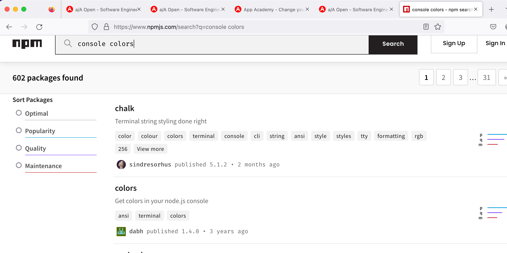
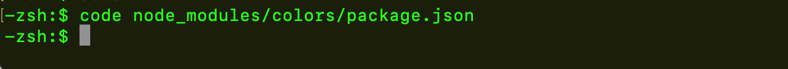

npm stands for Node Package Manager
The npm CLI is available as an npm package, which allows you to use the npm CLI to update itself. If you're using macOS or Linux, you can update the npm CLI to the latest version by running the following command:
npm install -g npm@latest
If you installed Node.js using the default installer, you might need to prefix the above command with sudo like this:
sudo npm install -g npm@latest
Any Node.js project that contains a package.json file is technically an npm package, though most of these projects will never be published to the npm registry for consumption by the general development community. Given that, it's common to refer to these unpublished npm packages as just "projects".
If you haven't already, create a folder for your project, then use the cd command to browse to that folder. From within your project folder, run the following command:
npm init
npm will prompt you to supply the following field values, one at a time:
At this point in the process, npm will display a preview of the package.json file and confirm if you want to continue:
Go ahead and answer with "y" or "yes". You'll now have a package.json file in the root of your project. If you want, you can open the package.json file in a code editor and make additional edits to it.
Pro tip: If you're like the majority of developers, you'll get tired of stepping through the above prompts time and time again when initializing a project to use npm. To save valuable time, you can pass the --y flag to the npm init command to generate a package.json file with all of the default values like this: npm init --y.
Let's use the npm registry to search for a package that'll allow you to add color to the messages logged to the console. Open the npm website into a browser tab. At the top of the page, use the "search packages" field to search for the keywords "console colors". npm-registry-search
Now that you've initialized your project using npm init (which generated a package.json file), you can use npm install to install an npm package locally into your project.
To install the colors npm package, run the following command:
npm install colors
To open the colors json from terminal, navigate to the directory where you installed the packages and use the following command
dependencies (npm packages often depend upon other npm packages), npm will automatically download those dependencies into the node_modules folder. This process recursively continues until all of the required dependencies are accounted for. Because of this, the node_modules folder tends to be very large, containing many folders and files.
If you're using Git for source control, you'll need to add a .gitignore file to the root of your project and add the entry node_modules/ so that the node_modules folder won't be tracked by Git. Later in this lesson you'll see that you only need to commit the package.json and package-lock.json files to your repository as that's all that npm needs to download and install your project's dependencies.
Pro Tip: While configuring Git to not track the node_modules folder is important to do, it's not necessarily the only thing you want to configure Git not to track. For a more comprehensive .gitignore file for Node.js projects, you can use GitHub's .gitignore file for Node.js projects.
dependencies (npm packages often depend upon other npm packages), npm will automatically download those dependencies into the node_modules folder. This process recursively continues until all of the required dependencies are accounted for. Because of this, the node_modules folder tends to be very large, containing many folders and files.
If you're using Git for source control, you'll need to add a .gitignore file to the root of your project and add the entry node_modules/ so that the node_modules folder won't be tracked by Git. Later in this lesson you'll see that you only need to commit the package.json and package-lock.json files to your repository as that's all that npm needs to download and install your project's dependencies.
Pro Tip: While configuring Git to not track the node_modules folder is important to do, it's not necessarily the only thing you want to configure Git not to track. For a more comprehensive .gitignore file for Node.js projects, you can use GitHub's .gitignore file for Node.js projects.
After installing an npm package, you can import it into a Node.js module using the require function.
Go ahead and add a file named index.js to your project. Then use the require function to import the colors module:
const colors = require('colors');
After importing the module, you can use it to add color to your console.log() method calls like this:
console.log('hello'.green); // outputs green text
console.log('i like cake and pies'.underline.red) // outputs red underlined text
console.log('inverse the color'.inverse); // inverses the color
console.log('OMG Rainbows!'.rainbow); // rainbow
console.log('Run the trap'.trap); // Drops the bass
npm tracks two types of dependencies in the package.json file:
To install a development dependency, you simply add the --save-dev flag:
npm install mocha --save-dev
The --save-dev flag causes npm will add the package to the devDependencies field in the package.json file:
{
"dependencies": {
"colors": "^1.4.0"
},
"devDependencies": {
"mocha": "^7.0.1"
}
}